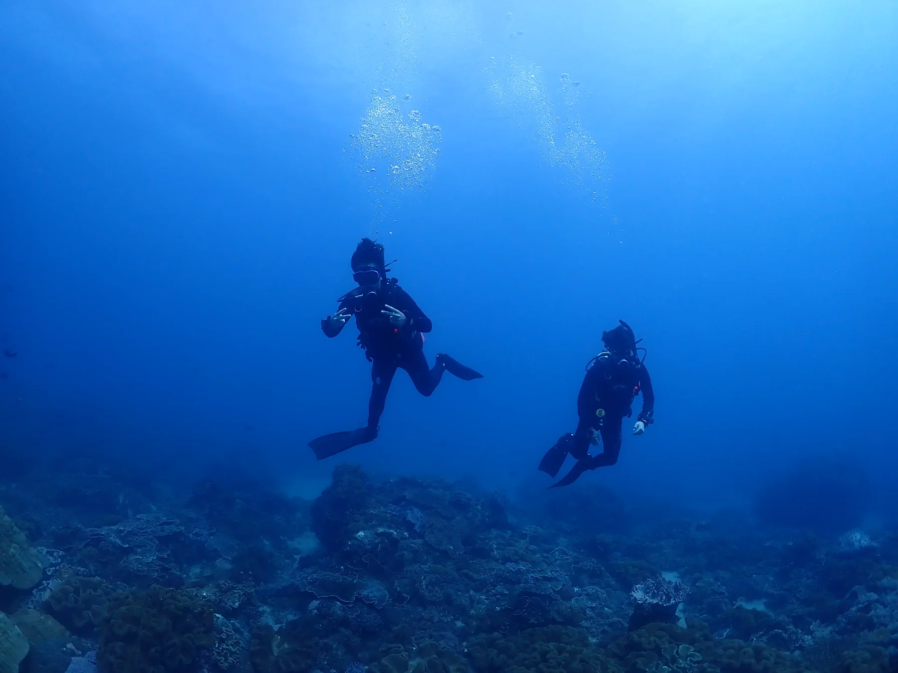
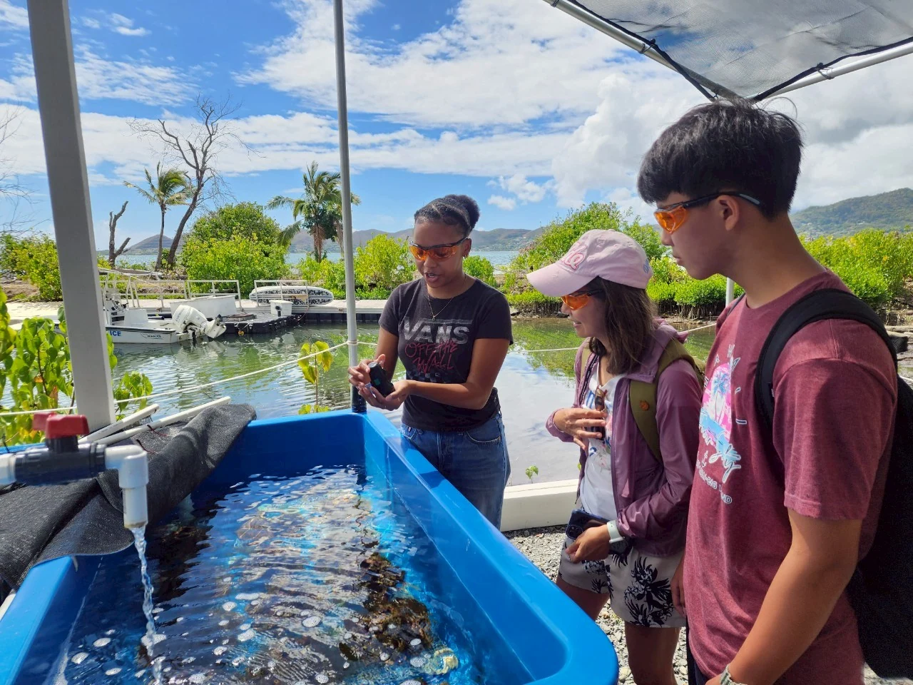
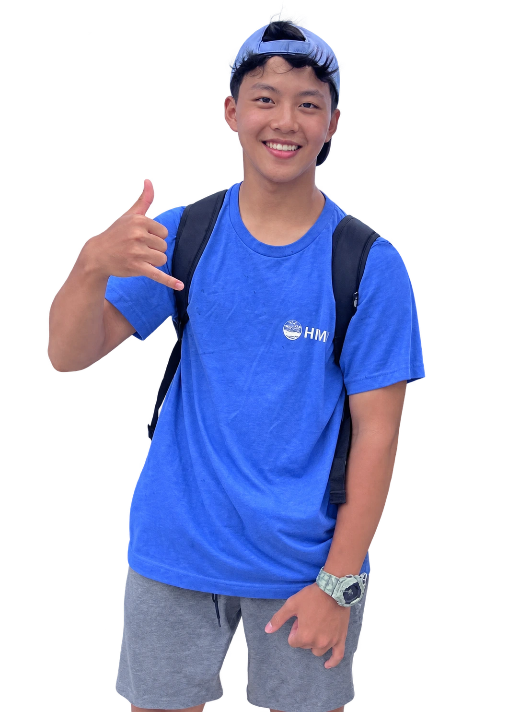
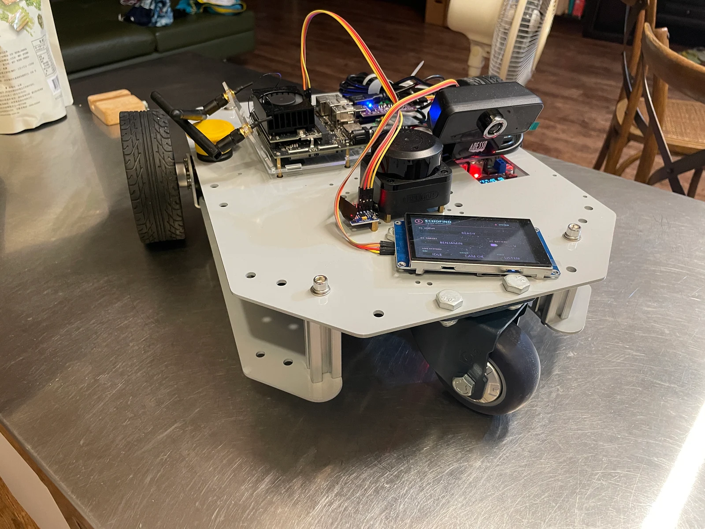

Taiwan → Hawaiʻi01 / Field learningA wider
A wider
field of view.


02 — Things I’m working on

Taiwan → Hawaiʻi
Archived demo · Final validation and limitations in project details ↗

Built. Wired. Moving. Reaper 23083Z / Team-built
Reaper 23083Z / Team-built
04 / VEX Robotics
My part: programming, testing,
and solving problems with the team.
03 — The next conversation